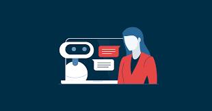

A inteligência artificial (IA) vem se consolidando como uma das principais forças da transformação digital no mundo. Grandes empresas de tecnologia estão investindo bilhões no desenvolvimento de sistemas capazes de automatizar tarefas, analisar grandes volumes de dados e otimizar processos em diferentes setores.
Com o avanço das redes neurais e do aprendizado de máquina, ferramentas baseadas em IA já conseguem realizar atividades que antes eram exclusivas de humanos, como geração de texto, reconhecimento de imagem e tomada de decisões estratégicas.
Empresas de diversos segmentos estão adotando soluções de inteligência artificial para aumentar a produtividade e reduzir custos operacionais. No setor financeiro, por exemplo, algoritmos são utilizados para detectar fraudes em tempo real. Já na área da saúde, sistemas inteligentes auxiliam no diagnóstico de doenças com maior precisão.
Além disso, o uso de chatbots e assistentes virtuais tem melhorado significativamente o atendimento ao cliente, tornando-o mais rápido e eficiente. Essa tendência deve continuar crescendo nos próximos anos, impulsionada pela evolução tecnológica e pela competitividade do mercado.

Apesar dos benefícios, o avanço da inteligência artificial também levanta questões importantes, como o impacto no mercado de trabalho e a ética no uso da tecnologia. Especialistas alertam que muitas profissões podem ser automatizadas, exigindo adaptação e requalificação dos profissionais.
Outro ponto de atenção é o uso responsável dos dados. A privacidade dos usuários e a transparência dos algoritmos são temas cada vez mais discutidos por governos e organizações ao redor do mundo.
Paralelamente, o desenvolvimento de hardware mais potente tem sido essencial para suportar o crescimento da IA. Novos processadores e placas de vídeo oferecem maior capacidade de processamento, permitindo avanços ainda mais rápidos nessa área.
O futuro da tecnologia aponta para uma integração cada vez maior entre humanos e máquinas. Conceitos como Internet das Coisas (IoT), computação em nuvem e inteligência artificial devem continuar evoluindo e impactando diretamente o dia a dia das pessoas.
A expectativa é que, nos próximos anos, a tecnologia se torne ainda mais presente em áreas como educação, transporte e entretenimento, trazendo novas oportunidades e desafios para a sociedade.